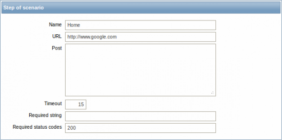

8. Web监控¶
概述¶
通过Zabbix你可以进行web站点的可用性检测.
警告
如果需要进行web监控，Zabbix server需要在安装的时候配置cURL(libcurl)支持.
为了进行web监控，你需要先定义一个web方案(scenarios). web方案包括一个或多个HTTP请求或”步骤(step)”. 步骤(step)的执行过程按照预先定义的顺序进行执行.
在web方案中，可以获取如下信息:
- 整个web方案中所有的步骤的平均下载速度
- 失败的步骤号
- 失败的报错信息
- 在web方案的具体步骤中，可以获取到如下信息:
- 该步骤的下载速度
- 回应时间
- 回应状态码
Zabbix可以检查获取到的HTML页面中是否包含预先设置的字符串. 也可以完成登录和页面点击.
Zabbix Web监控支持HTTP和HTTPS. 在同一个Web方案中，zabbix支持跳转，并且共享在整个执行过程中的cookies.
小技巧
在使用HTTP代理时，请设置’http_proxy’变量. 例如’http_proxy=http://proxy_ip:proxy_port’; 如果想通过HTTP代理完成HTTPS检查，需要设置’HTTPS_PROXY’变量，例如’HTTPS_PROXY=http://proxy_ip:proxy_port’,更多详情请通过shell命令’man curl’获得.
整个web方案执行过程中，采集的数据将会直接保存在数据库中,并且完成自动绘图、触发器、告警通知. 详情请访问`Web监控项`.
配置一个方案¶
创建web方案的首先需要创建一个合适的应用(application)，除非你已经有一个。 Web方案链接到组的应用.

接下来，配置一个web方案:
- 选择 Configuration -> Web
- 选择右侧的 Create scenario (或者编辑已经存在的方案名字)
- 在表格中输入方案参数(parameter)
Scenario 允许在web方案中配置常用参数.

常用参数有:
| 参数 | 描述 |
|---|---|
| Application | 选择本方案属于哪个应用(application),指定的application必须存在 |
| Name | 唯一的方案名 |
| Authentication | 认证选项.
None - 不用认证.
Basic authentication - 使用基本认证.
NTLM authentication - 使用NTLM(Windows NT LAN Manager)认证
如果选择认证方式的话，将新增两列，进行用户名和密码的填写
|
| Update interval (in sec) | 多长执行一次web方案监控,单位为秒 |
| Agent | 选择客户端的agent接口,Zabbix提供一个选择框，这个对于不同浏览不能内容非常有用 |
| ·Variables· | 在方案步骤中(URL, POST变量)使用的变量(宏)
支持下面格式:
{macro1} =value1
{macro2} =value2
例如:
{username}=Alexei
{password}=kj3h5kj34bd
在步骤中可以引用{username}和{password}宏.Zabbix会自动替换为设定的值
|
| Active | 如果选择这个框，方案将处于active状态，否则为disabled. |
Steps 标签页允许你配置web方案步骤.

配置步骤¶
如果你想添加一个web方案步骤，请在 Steps 标签页中点击 Add 按钮.
步骤(step)参数如下:
| 参数 | 描述 |
|---|---|
| Name | 唯一的步骤名 |
| URL | |
| Post | 如果有，则为HTTP POST的变量 例如: id=2345&userid={user} 如果web方案中定义了{user}宏，在该步骤执行过程中将替换对定义的值 内容将会按照填写的发送 |
| Timeout | Zabbix不会花费超过该值(单位秒)的时间去处理这个URL. 实际环境中，该值一般设置为创建和连接URL及完成HTTP请求的最大时间. 因此，Zabbix不会在该步骤花费2倍于本Timeout设置的秒数 例如：15 |
| Required | 用于请求的正则表达式选项
如果请求中得到的内容(HTML)不匹配该正则表达式内容，该步骤意味失败
如果该项为空，则不做该检查
例如: Homepage of Zabbix /Welcome.*admin
|
| Status codes | 希望得到的HTTP状态码列表。如果Zabbix得到的状态不在该列表中，该步骤失败
如果该项为空，则不做该检查
例如: 200,201,210-299
|
警告
任何在web方案步骤中进行的修改只有当整个方案进行保存时才进行保存.
也可以访问 方案真实场景 获知如何配置web监控步骤.